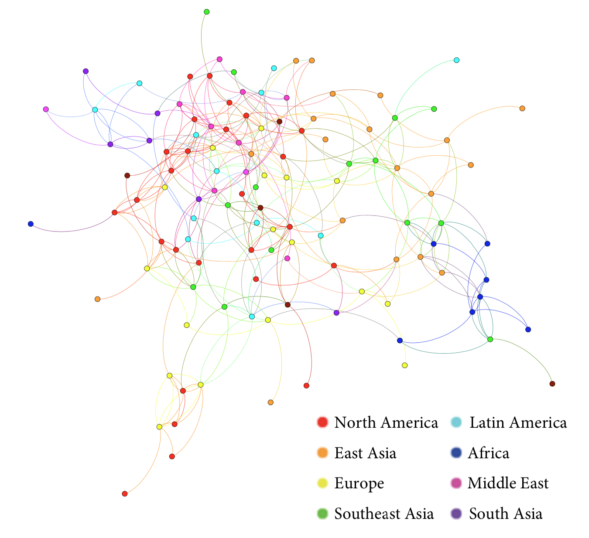

Visualising Community
I created an explorable for people to engage with the network research conducted by a group of students at college. The project grew out of a desire to show different network representations of our student community.
Collecting the data was a multi-year effort by a group of students. Having finished the project after 3 years of hard work the group wanted to make the data they had generated accessible in an interactive and explorable way.
The biggest success they had by then was with a series of photos posted on facebook showing the network change over time:

We decided to build on this success by making a site which allows the visitar to filter any combination of any of the variables represented in the data. This gives the visitor a lot of freedom to explore the data and make their own conclusions. Part of the reason for this is that we did not want to bias visitors with out interpretations. At the time of writing we are still figuring out what the right balance between freedom and guidance is when it comes to creating interactive visualisation experiences.